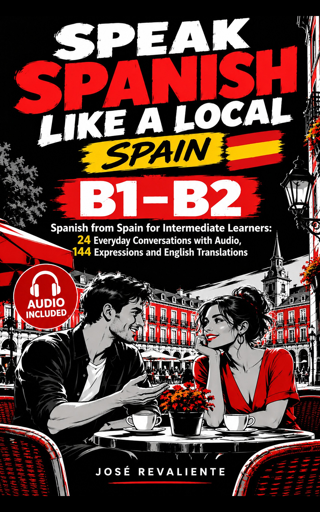

144 Spanish expressions
Every chapter’s six conversational expressions, with English meanings and examples from the book.

Official reader companion · B1–B2 · Spain
Improve your real-world Spanish with 24 conversations set in Madrid, audio for every chapter and 144 expressions you can actually use.
Companion to the book by José Revaliente · Not a replacement for the full text.
One recording per chapter. Select a conversation to open the player, listen and practise the phrases you encountered in the book.
No matching chapters. Try a different search.
Six complementary tools to strengthen vocabulary, understand character choices and practise your own conversations.
Every chapter’s six conversational expressions, with English meanings and examples from the book.
Import the complete Anki deck or practise the same 144 expressions with interactive flashcards.
Follow the practical challenges and turning points across all 24 chapters.
Understand Nora, Inés, Elena, Dani and Mateo: what each needs and where they clash.
24 guided worksheets for listening, recall, speaking practice and reflection; printable from your browser.
All 24 supplied chapter audio links in one machine-readable file.
Build comprehension first, then make the expressions yours.
Read the dialogue in the book. Identify what each speaker needs.
Play the chapter audio twice: once for meaning, once for intonation.
Practise six expressions in Anki or the online flashcards.
Use the printable worksheets to respond in your own words.